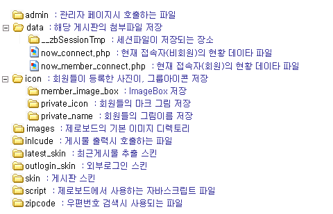

설치후 확인사항
다음은 제로보드의 기본설정 변경에 대해서 알아보도록 하겠습니다.
제로보드를 처음 설치후에 꼭 확인을 해보시는 것이 좋습니다.
우선 제일 위에 3개인 웹마스터 E-Mail, 사이트 주소, 사이트 이름은 꼭 입력하셔야 합니다.
입력하지 않으시면 비밀번호 찾기 기능이 동작하지 않습니다
기본 설정 변경은 setup.php 파일을 열어서 수정하시면 됩니다.
setup.php 파일을 열면 다음과 같은 내용이 있습니다.
<?/*
; 이 파일은 제로보드의 기본 시스템 및 기타 설정을 위한 파일입니다.
; 아래 항목중에서 필요한 부분을 수정하시기 바랍니다.
; 값이 없는 부분은 기본값으로 설정이 됩니다.
; 웹마스터 E-Mail (비밀번호 분실시 안내메일에서 필요합니다)
email =
; 사이트 주소 (비밀번호 분실시 안내메일에서 필요합니다)
url =
; 사이트 이름 (비밀번호 분실시 안내메일에서 필요합니다)
sitename =
; 세션 디렉토리 (기본으로 제로보드의 data/__ZbSessionTMP 디렉토리입니다)
session_path = data/__zbSessionTMP
; 조회수 세션 크기 조절 (지정된 크기보다 커지면 자동 삭제, byte 단위)
session_view_size = 512
; 추천수 세션 크기 조절 (지정된 크기보다 커지면 자동 삭제, byte 단위)
session_vote_size = 256
; 로그인 유효시간 (지정된 시간만큼 아무동작이 없으면 자동으로 로그아웃됩니다. 자동로그인시 제외. 초단위입니다.)
login_time = 1800
; 현재 접속자 사용 설정 ( true : 사용, false : 사용안함)
nowconnect_enable = true
; 현재 접속자 갱신시간 (지정된 시간이 지나야 현재 접속자 파일에 다시 접근합니다. 초단위입니다.)
nowconnect_refresh_time = 180
; 현재 접속자 유효시간 (지정된 시간내에 활동한 사람이 현재 접속자로 분류됩니다. 5분이 기본이며 분단위입니다)
nowconnect_time = 5
; 가입시 한글 아이디 사용을 허락 ( true : 사용, false : 사용안함)
enable_hangul_id = false
; E-Mail 의 MX를 검사하여 허위 E-Mail인지 검사 ( true : 허위 E-Mail 검사, false : 검사안함)
check_email = false
; 쪽지 보관 일수의 저장 ( ex) 10 -> 10일)
memo_limit_time = 7
*/?>
|
위의 파일 내용에서 ; 로 시작하게 되면 주석이 됩니다.
그리고 진한 색으로 표시 된것이 직접 설정을 바꿀수 있는 부분입니다.
우선 제일 위에 3개인 웹마스터 E-Mail, 사이트 주소, 사이트 이름은 꼭 입력하셔야 합니다.
그 외의 설정은 세션이나 로그인 시간, 현재 접속자 체크 시간등인데 기본 값으로 유지하시는 것이 좋습니다.
제로보드 디렉토리 구조

|